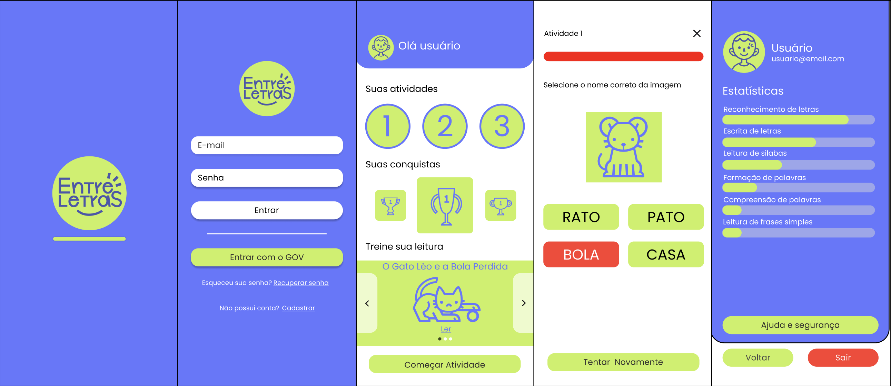

UX/UI · Pesquisa · Acessibilidade
Entre Letras
Criando uma experiência de alfabetização acessível para idosos com baixo letramento digital.

Sobre o projeto
O Entre Letras surgiu de um desafio acadêmico voltado à solução de um problema educacional. A partir da pesquisa e do contato com comunidades locais, direcionamos o projeto para idosos em processo de alfabetização e com pouca familiaridade com tecnologias digitais. O desafio passou a ser criar uma experiência que considerasse essas duas necessidades ao mesmo tempo: aprender a ler e escrever enquanto se aprende a interagir com uma ferramenta digital.
Pesquisa
A pesquisa envolveu benchmarking de aplicativos educacionais e, principalmente, o contato com comunidades locais. Essa aproximação permitiu compreender melhor o contexto do público e perceber dificuldades que não seriam identificadas apenas pela análise de outras soluções. A partir desses achados, a experiência foi pensada para reduzir a complexidade da interação e tornar as atividades mais acessíveis ao público.
Testes de usabilidade
A solução foi submetida a testes de usabilidade com usuários reais, realizados em uma escola de Quixadá-CE que desenvolve um projeto social de alfabetização de idosos. O contato direto com o público permitiu observar como os participantes compreendiam a interface e identificar dificuldades de navegação, compreensão e acessibilidade, utilizando esses resultados para orientar ajustes na experiência.